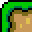
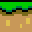
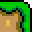
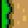
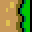
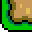
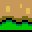
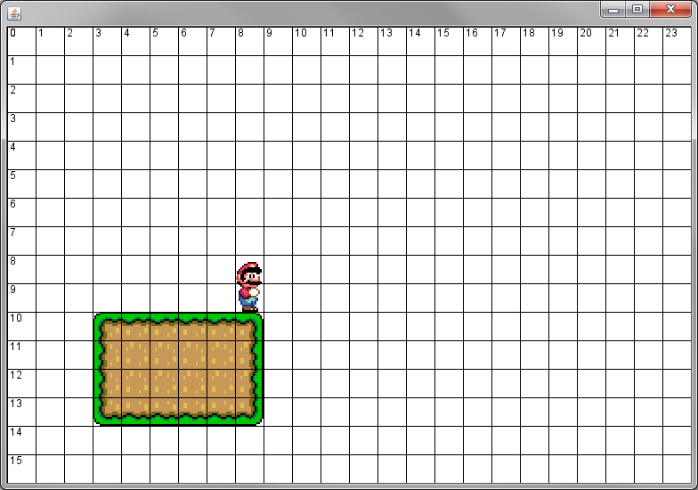

Previously, we looked at a way to use tiles to create pipes of varying lengths. Instead of a number of pixels to take in, we took a number of cells wide/tall the Obstacle was so that we can use the rule of 32 to loop through each direction.
These objects that we've made only extend in one direction. A ThinHPipe is always going to have a height of 32. The next challenge is to make a class that will create platforms of a varying width and height. This will allow us to easily create levels for our world.
Two Dimensional platforms need nine different images in order to tile properly in both directions.







Create a class named Platform that implements the Obstacle interface, which will represent any two dimensional platform object. Have NINE Pictures as instance fields to represent the nine possibilities. Also add four ints to the instance fields: x,y,cellsWide,cellsTall. This time we need both a cellsWide and a cellsTall for the looping.
The constructor for Platform should take in FIVE ints. A row,column,cellsWide,cellsTall, and a type variable similar to the Pipe classes. The first four parameters will go into the instance fields (use 32 to convert the columns/rows into x/y) and the fifth will be ignored (for now).
Similar to before, the platform tiles are all grouped in a specific arrangement on the sprite sheet. Add a method named loadImages, which will take in two ints that represent the row and column of where the upper-left image is. The method should make sure to load all nine of the images based on the parameters to this method. After you finish this method, make sure that your constructor calls the method with (8,0) as the parameters. This should theoretically load the dirt blocks with grass on them.
Add a moveLeft, moveRight, and getHitBox method. This time the getHitBox will have to multiply to get the value for both the width AND the height of the BoundingBox.
Painting the object is the challenge. In reality, it's a nested for-loop problem as we need a loop to help tile in the x direction, and a loop to tile in the y direction. To make our lives a little easier, let's create a helper method.
public void paintRow(PaintBrush brush, int xLoc, int yLoc, Picture left, Picture mid, Picture right)
This method's purpose is to only draw a single row of tiles whose width is determined by your 'cellsWide' instance field. Write the code so that the method uses the given PaintBrush to paint a single row starting at the given xLoc and yLoc. You don't choose the three images to draw, you just paint the ones that are given to you as parameters. This method should look similar to ThinHPipe's paintSelf method.
To test this we are going to try the top level first. Add the standard paintSelf method to the Platform class. The only line in the paintSelf method should be a call to paintRow, giving it the PaintBrush, the x/y instance fields, and the three "top" images. After this compiles, go to your PlatformerCanvas and add a new Platform with location 10,3, is 6 cells wide and 4 cells tall. For the moment, the first parameter can be anything. You should get something similar to the image below.

Now that we know our paintRow method works, we can modify the paintSelf method to draw the other rows that the object has. This is going to have a loop very similar to the paintSelf method of the vertical pipes, but instead of painting a single image at each y location for the top, middle, and bottom, you're going to call paintRow with the three images for the topRow, the middleRow, and the bottomRow. Run the program one more time to confirm that the full platform is being painted.

You should confirm at this moment that the platform is the right size. Since we constructed it with a 6 and a 4 for the width and height, make sure that the end result is the right dimensions.
You're already pretty close to having different types of platforms. Similar to before, you're going to want to have public static ints to represent each type of Platform that you would like to have (You must have at least three types of platform).
After the ints are set up, modify your constructor to look at the 'type' parameter and call the loadImages method with the appropriate row/col for that type. This should be very similar to the pipe classes.
In order to test your program, create a method named loadPlatformLevel which will add one of each different type of platforms with the following dimensions:
1) row 10, column 3, width 6, height 4
2) row 7, column 11, width 5, height 6
3) row 14, column 7, width 16, height 4